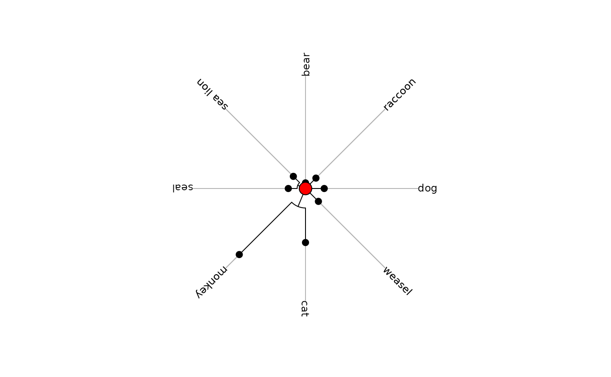

Phylogenetic trees in Newick format
newick.eg.RdThis data set contains various exemples of phylogenetic trees in Newick format.
Usage
data(newick.eg)Source
Trees 1 to 7 were obtained from the phylip software.
Trees 8 and 9 were obtained by Clémentine Carpentier-Gimaret.
Tree 10 was obtained from Treezilla Data Sets .
Trees 11 and 12 are taken from Bauwens and Díaz-Uriarte (1997).
Tree 13 is taken from Cheverud and Dow (1985).
Tree 13 is taken from Martins and Hansen (1997).
References
Bauwens, D. and Díaz-Uriarte, R. (1997) Covariation of life-history traits in lacertid lizards: a comparative study. American Naturalist, 149, 91–111.
Cheverud, J. and Dow, M.M. (1985) An autocorrelation analysis of genetic variation due to lineal fission in social groups of rhesus macaques. American Journal of Physical Anthropology, 67, 113–122.
Martins, E. P. and Hansen, T.F. (1997) Phylogenies and the comparative method: a general approach to incorporating phylogenetic information into the analysis of interspecific data. American Naturalist, 149, 646–667.
Examples
data(newick.eg)
newick2phylog(newick.eg[[11]])
#> Phylogenetic tree with 18 leaves and 17 nodes
#> $class: phylog
#> $call: newick2phylog(x.tre = newick.eg[[11]])
#> $tre: ((Sa,Sh)I1,((((Tl,(Mc,My)...Ls,Lv)I13)I14)I15)I16)Root;
#>
#> class length content
#> $leaves numeric 18 length of the first preceeding adjacent edge
#> $nodes numeric 17 length of the first preceeding adjacent edge
#> $parts list 17 subsets of descendant nodes
#> $paths list 35 path from root to node or leave
#> $droot numeric 35 distance to root
#>
#> class dim content
#> $Wmat matrix 18-18 W matrix : root to the closest ancestor
#> $Wdist dist 153 Nodal distances
#> $Wvalues numeric 17 Eigen values of QWQ/sum(Q)
#> $Wscores data.frame 18-17 Eigen vectors of QWQ '1/n' normed
#> $Amat matrix 18-18 Topological proximity matrix A
#> $Avalues numeric 17 Eigen values of QAQ matrix
#> $Adim integer 1 number of positive eigen values of QAQ
#> $Ascores data.frame 18-17 Eigen vectors of QAQ '1/n' normed
#> $Aparam data.frame 17-3 Topological indices for nodes
#> $Bindica data.frame 18-17 class indicator from nodes
#> $Bscores data.frame 18-17 Topological orthonormal basis '1/n' normed
#> $Blabels character 17 Nodes labelling from orthonormal basis
radial.phylog(newick2phylog(newick.eg[[7]]), circ = 1,
clabel.l = 0.75)
